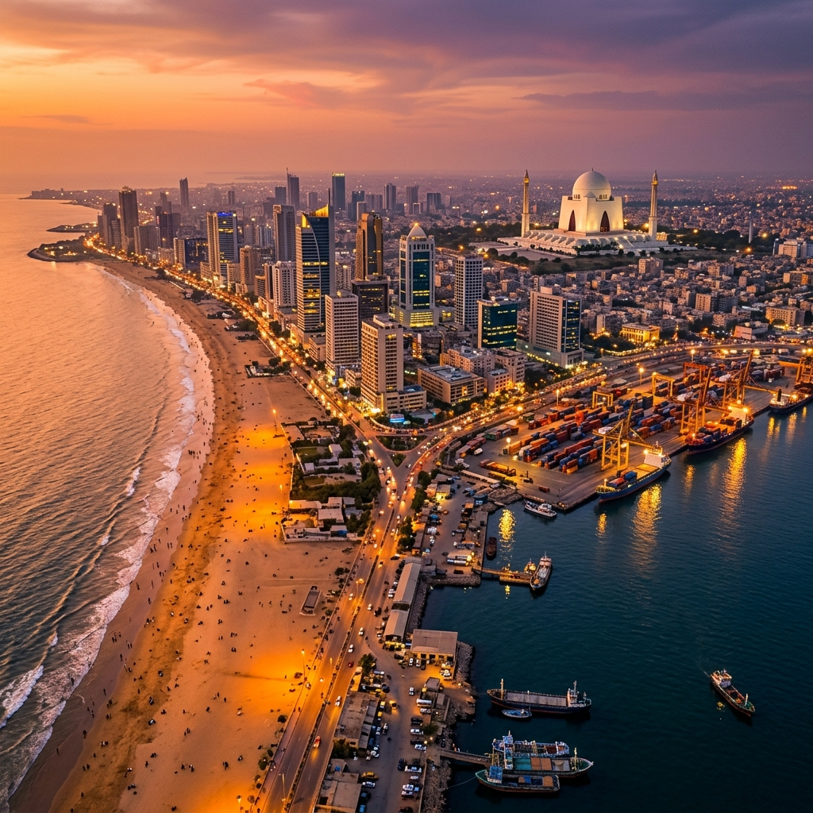

Where the Arabian Sea breeze meets a relentless urban heartbeat — Karachi is Pakistan's city of dreams.
Karachi, the "City of Lights", is Pakistan's economic powerhouse, cultural melting pot, and largest metropolis. Nestled on the coast of the Arabian Sea, it has grown from a tiny 18th-century fortified fishing settlement (Kolachi) into a dynamic megacity of over 20 million people.
It is a city that never sleeps, defined by its incredible diversity, historic colonial-era architecture, sprawling golden beaches, and a culinary scene that ranks among the most diverse and vibrant in South Asia.

From sandy shores to grand architecture — Karachi offers an unforgettable urban adventure.
The iconic sandy shore where millions gather to feel the Arabian Sea breeze, enjoy camel rides, and watch stunning ocean sunsets.
The spectacular white marble mausoleum of Pakistan's founder, Muhammad Ali Jinnah, surrounded by a lush 53-hectare park.
Built in 1927 in the Rajasthani style, this beautiful palace of pink Jodhpur stone is now a prominent art museum.
The legendary cradle of Karachi's street food, famous for historic eateries serving Bun Kababs, Haleem, and Biryani.
A short boat trip from the city, offering crystal-clear waters perfect for scuba diving, snorkeling, and marine life viewing.
A massive naval museum featuring outdoor exhibits, a real submarine, and beautifully landscaped gardens.
The ultimate route to experience the energy and coastal beauty of Karachi.
The adventure continues across the country.